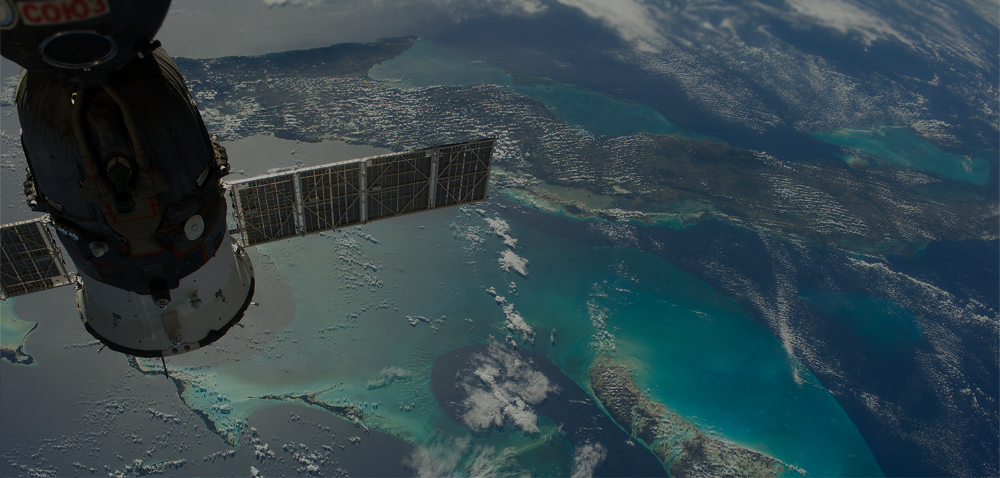
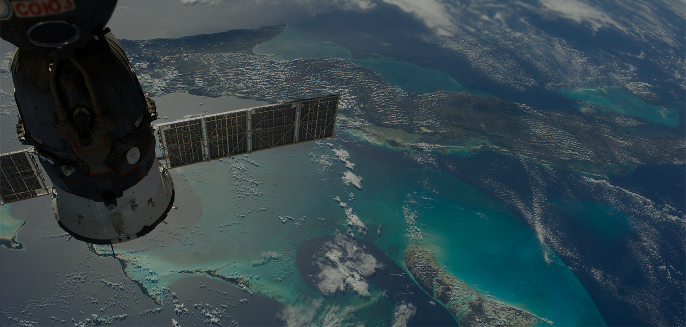
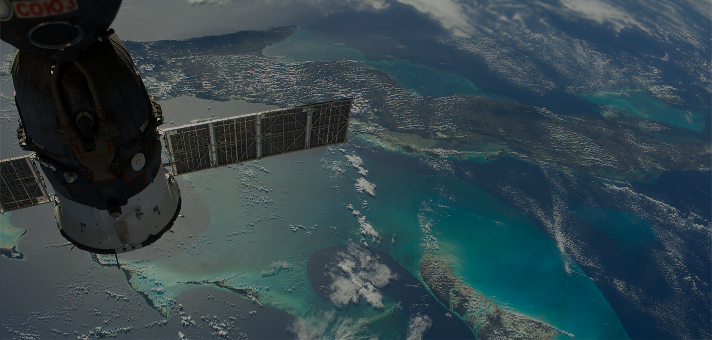
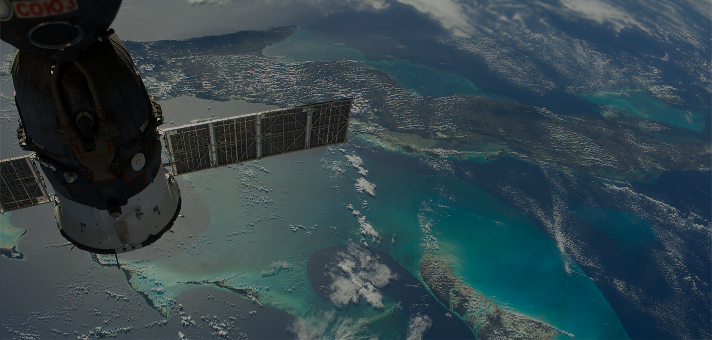

High News
Новостной портал


 



Астрофизики из Франкфуртского университет им. И.В. Гёте, Германия, установили новый предел максимальной массы нейтронной звезды: не более 2,16 массы Солнца.
Начиная с самого открытия нейтронных звезд, которое состоялось в 1960 г., ученые искали ответ на важный вопрос: насколько массивными могут быть нейтронные звезды? В отличие от черных дыр нейтронные звезды не могут набирать массу неограниченно – существует предел, при превышении которого нейтронная звезда «схлопывается» в черную дыру. В своем исследовании астрофизики из Франкфуртского университета им. И.В. Гёте впервые строго рассчитали величину предельной массы нейтронных звезд.
В своей работе исследователи под руководством профессора физики Лучано Резолла (Luciano Rezzolla) выяснили, что верхний предел массы нейтронной звезды составляет строго 2,16 массы Солнца. Основой расчетов стал принцип «универсальных отношений» разработанный во Франкфурте несколько лет назад. Существование «универсальных отношений» подразумевает, что практически все нейтронные звезды «выглядят похоже» в том смысле, что их свойства могут быть выражены безразмерными величинами.
В новой работе исследователи объединили эти «универсальные отношения» с данными гравитационно-волновых наблюдений слияния нейтронных звезд и послесвечения этого события (т.н. «килоновы»), полученными при помощи обсерватории LIGO в прошлом году. Это упростило расчеты и сделало их независимыми от уравнения состояния материи нейтронной звезды. Уравнение состояния представляет собой теоретическую модель, описывающую поведение плотной материи внутри звезды на разных глубинах.